AI & DATA GROWTH OPERATING COMPANY
퍼포먼스 마케팅을 넘어, 성장 구조를 설계합니다.
AQNET은 광고 운영, 데이터, CRM, 커머스를 하나의 성장 시스템으로 연결하고 AI 기반 의사결정으로 반복 가능한 성과 구조를 만드는 마케팅 기술 컴퍼니입니다.
흩어진 신호가 AQ Growth OS 시스템으로 연결됩니다.
Google Ads
Meta
YouTube
TikTok
Naver GFA
Kakao Moment
Google Analytics 4
Appsflyer
Airbridge
Amplitude
BigQuery
CRM Automation
ABOUT AQNET
데이터, AI, 크리에이티브, 미디어 운영을 하나의 성장 시스템으로 연결합니다
Why AQNET?
AQ는 Adaptability Quotient,
변화에 적응하는 능력입니다.
광고는 계속 변합니다. AI도 변합니다. 플랫폼도 변합니다.
AQNET은 고객 행동 데이터와 매체 성과, 콘텐츠 반응, CRM 신호를 함께 읽어 변화를 반복 가능한 성장 구조로 전환합니다.
우리는 변화에 적응하는 능력 자체를 설계합니다.
Capabilities
- Data Infrastructure
- AI Automation
- Funnel Design
- Creative Intelligence
-
01
진단
산업, 상품, 고객 행동 데이터를 기준으로 성장 병목을 찾습니다.
-
02
실행
매체 운영과 크리에이티브 실험을 같은 가설 아래 빠르게 검증합니다.
-
03
자동화
리포팅, 이상 신호, 소재/예산 판단을 운영 가능한 시스템으로 정리합니다.
-
04
학습
광고 결과를 리포트로 끝내지 않고 다음 퍼널 개선으로 연결합니다.
AQ FRAMEWORK
Every Growth Starts
with Adaptability.
AQNET의 성장 운영은 통제(Control), 책임(Ownership), 확장(Reach), 지속(Endurance) — 네 가지 적응 축(C·O·R·E) 위에서 설계됩니다.
Control
데이터를 통제합니다.
Ownership
성과를 끝까지 책임집니다.
Reach
성과를 확장합니다.
Endurance
성과를 지속시킵니다.
SERVICE
데이터 분석, AI 운영, 퍼포먼스 실행을 하나의 성장 모듈로 설계합니다
Data Analytics
매체, CRM, 커머스, 고객 행동 데이터를 통합해
구매 여정과 성장 병목을 해석합니다.
- 대시보드와 정기 리포트
- 퍼널별 KPI 설계
- 행동 데이터 분석
AI Marketing Solution
반복 운영을 줄이고 캠페인 의사결정 속도를
높이는 AI 기반 운영 환경을 구축합니다.
- 자동 리포팅과 이상 신호 감지
- 소재/예산 조정 우선순위 추천
- 캠페인 운영 지식 자산화
Performance Marketing
검색, 디스플레이, 소셜, 앱, 비디오,
리테일 미디어까지 목표별 매체 전략을 설계합니다.
- 캠페인 구조 진단
- 예산 배분과 입찰 운영
- ROAS, CPA, LTV 기준 최적화
Creative & Contents
데이터로 가설을 세우고 소재, 숏폼,
랜딩 메시지를 실험해 전환 가능성을 높입니다.
- 퍼포먼스 소재 기획
- 콘텐츠 메시지 매트릭스
- A/B 테스트 운영
CRM / Funnel Consulting
유입 이후의 리텐션과 재구매까지 고려해
CRM 캠페인과 퍼널 흐름을 설계합니다.
- 세그먼트 전략
- 리드 nurturing
- 전환 단계 개선
Commerce Growth
상품, 채널, 프로모션, 광고 데이터를 연결해
커머스 브랜드의 성과 구조를 만듭니다.
- 상품군별 운영 전략
- 프로모션 성과 분석
- 리테일 미디어 확장
MEDIA PRODUCTS
검색부터 쇼핑까지, 목표에 맞는 광고 상품을 운영합니다
검색광고
구매 의도가 가장 명확한 검색 수요를 전환으로 연결합니다.
네이버 SA · Google Ads디스플레이·배너광고
잠재 고객 도달과 리타겟팅으로 퍼널 상단을 넓힙니다.
네이버 GFA · GDN · 카카오모먼트SNS·영상광고
콘텐츠 반응 데이터로 소재를 검증하며 전환을 만듭니다.
Meta · YouTube · TikTok오픈마켓·쇼핑광고
구매 직전 트래픽을 상품 단위로 최적화합니다.
네이버쇼핑 · 쿠팡SOLUTION
AQ Growth OS
광고, CRM, 커머스, 콘텐츠 데이터를 연결해 다음 액션을 결정하고
실행 결과를 다시 학습하는
AQNET의 성장 운영 프레임입니다. 이 운영 루프는 통합 대시보드 v1.0과
대화형 레포트 v2.0으로 제품화됩니다.
-
01Collect
광고, CRM, 커머스, 콘텐츠 반응 데이터 연결
-
02Analyze
세그먼트, 전환 병목, 채널 기여도 해석
-
03Decide
예산, 소재, CRM 액션의 우선순위 결정
-
04Execute
캠페인, 콘텐츠, 랜딩, 퍼널 개선 실행
-
05Learn
실행 결과를 다음 성장 가설로 재구성
Total Spend
₩84.2M
+12.4%
Impressions
12.4M
+8.1%
Conversions
3,284
+21.6%
Avg. ROAS
0
+0.34x
CHANNEL ROAS
Kakao412%
Naver388%
Meta506%
Google441%
CONVERSATIONAL REPORT · v2.0
지난 7일 ROAS 상위 캠페인 3개 보여줘
Meta 리타게팅 612%가 가장 높았습니다. 예산 +20% 적용 시 전환 +14~18% 예상됩니다.
대시보드 데모 안내 받기 →
AQ Growth 콘솔 OS 예시 화면입니다.
WORKS
데이터로 검증한
성장 사례와 운영 레퍼런스
예산과 매출 수치를 단순 성과표로 보지 않고, 채널 구조와 구매 여정 개선을 함께 설계한 사례입니다.
뮐러악기
월 예산2천만원
광고 매출2.5억
고관여 상품의 검색 수요와 상세페이지 전환 신호를 함께 읽어 브랜드스토어 운영 구조를 개선했습니다.
삼천리자전거 프리미엄샵
월 예산3천만원
광고 매출4억
시즌성 수요, 상품군별 전환율, 스토어 유입 경로를 기준으로 예산과 캠페인 구조를 재배치했습니다.
POC
월 예산3천만원
광고 매출1억 5천
전문 상품군의 타겟 수요와 구매 전환 단계를 분리해 캠페인 메시지와 랜딩 흐름을 정리했습니다.
여섯별 이야기
월 예산800만원
매출3억
제한된 예산 안에서 효율이 높은 고객 반응을 추적하고 콘텐츠 메시지를 빠르게 반복 검증했습니다.
전국대표 팔도장터
월 예산100만원
매출6천만원
마켓형 상품 구성과 지역성 메시지를 기준으로 캠페인 효율을 우선 검증한 뒤 확장했습니다.
※ 광고 매출은 광고비로 발생한 매출 기준이며, 상품군·운영 기간에 따라 차이가 있습니다.
우리 브랜드 기준의 진단이 궁금하다면
무료 성장 진단 요청
운영 중인 광고·CRM·커머스 데이터 기준으로 2영업일 이내 1차 진단을 회신드립니다.
CLIENT NETWORK
생활가전, 펫, 식품, 뷰티, 테크까지 연결된 성장 파트너 네트워크
산업은 달라도, 성장의 구조는 데이터로 연결됩니다.
AQNET은 브랜드별 고객 여정과
채널 신호를 읽어 확장 가능한 운영 전략으로 전환합니다.
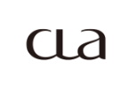
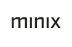
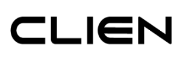
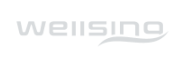
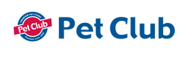
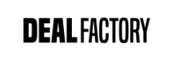
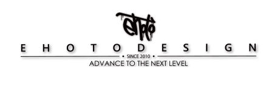
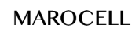
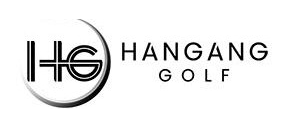
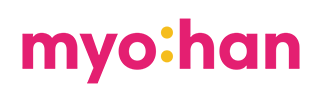
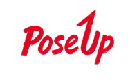
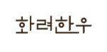
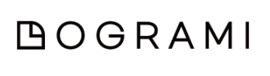
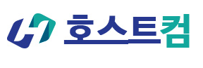
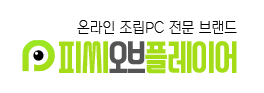
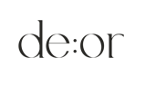
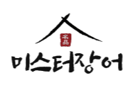
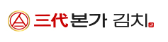
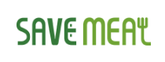
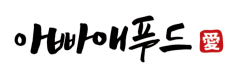
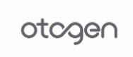
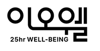
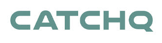
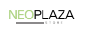
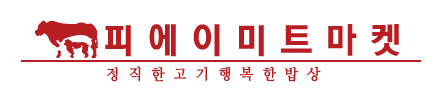
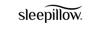
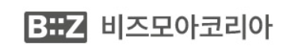
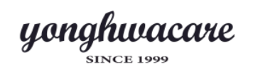
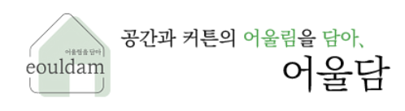
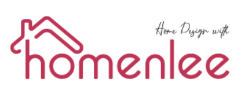
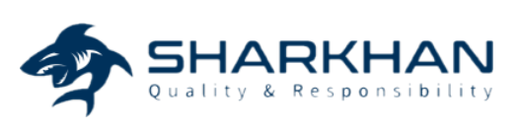
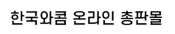
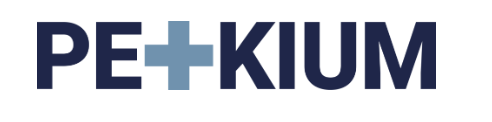
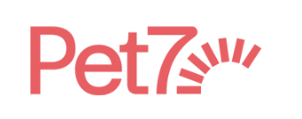
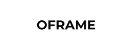
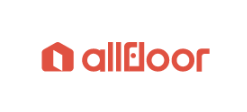
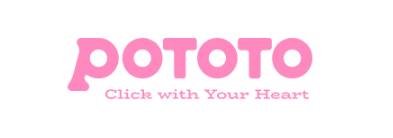
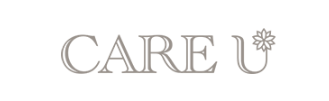
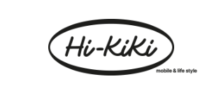
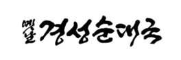
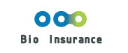
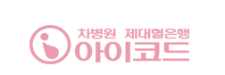
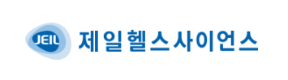
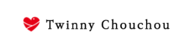
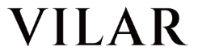
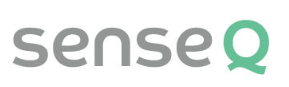
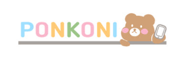
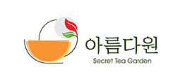
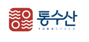
INSIGHT
운영 결과가 다음 전략이 되는
데이터 인사이트
AQNET의 인사이트는 캠페인 리포트가 아니라 다음 의사결정을 위한 운영 가설로 정리됩니다.
CONTACT
성장 구조를 함께 설계할 준비가 되었습니다.
현재 운영 중인 광고, CRM, 커머스, 고객 행동 데이터를 기준으로
진단 범위와 우선순위부터 정리해드립니다.